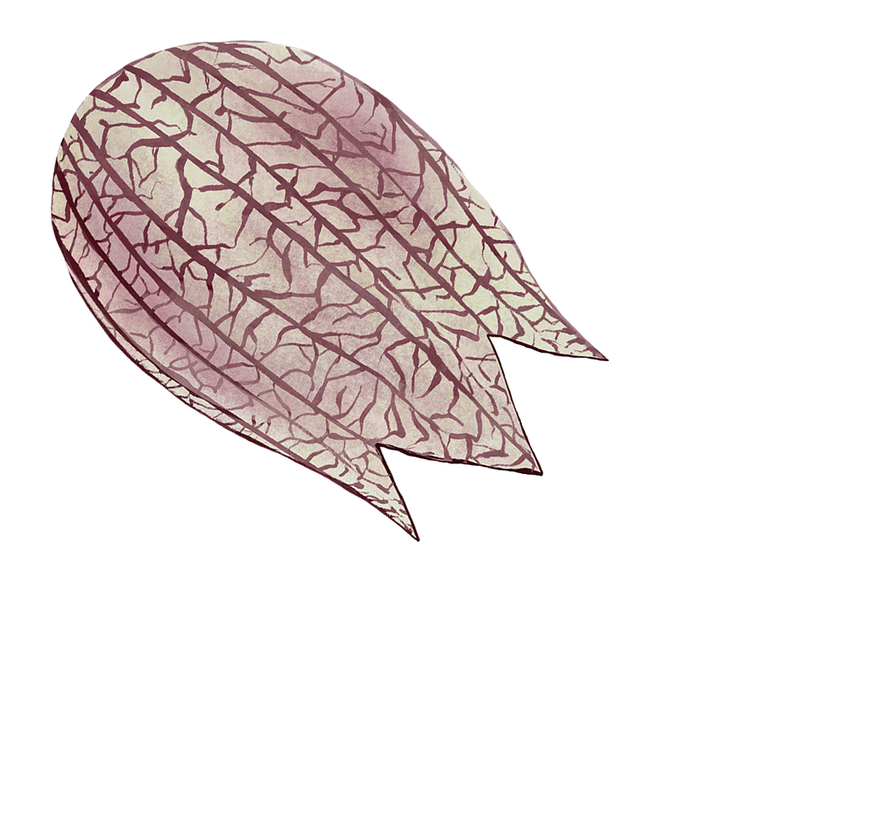
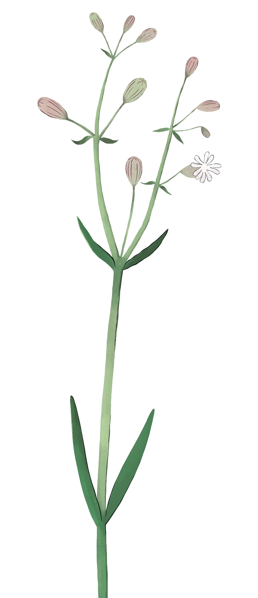
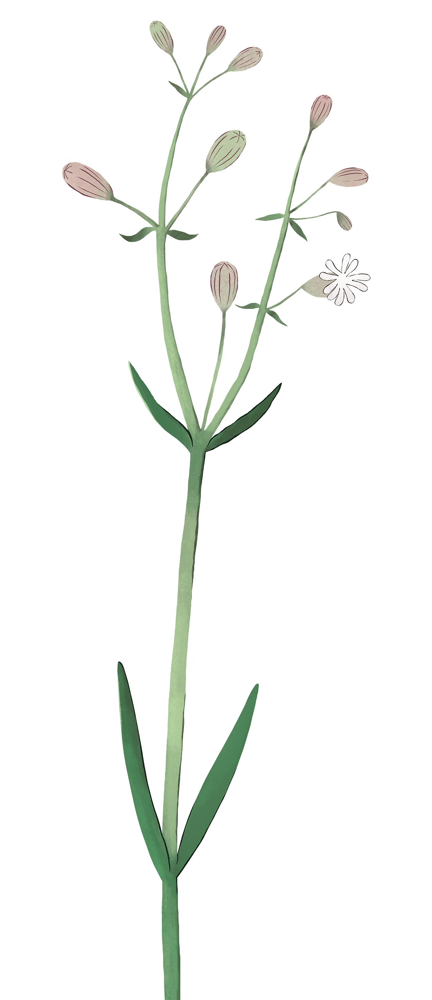
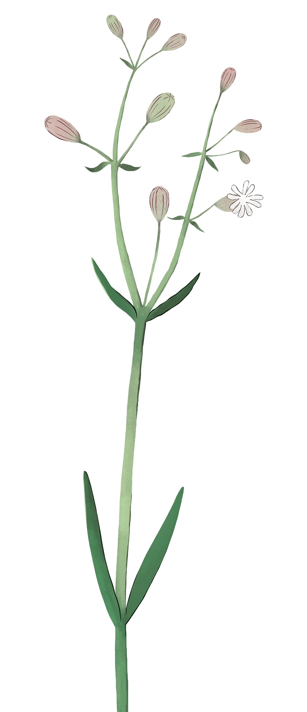

SILENE RIGONFIA
Silene vulgaris
CARYOPHYLLACEAE
MORFOLOGIA
Pianta erbacea perenne alta 30 - 70 cm con fusto cilindrico e glabro, dalle foglie lineari-lanceolate, carnosette, senza picciolo. I fiori sono gonfi con nervature e hanno 5 petali bianchi nella corolla. Il frutto è un calice persistente (vive a lungo) e presenta molti semi interni.
HABITAT
Comunissima in tutte le giorni italiane è diffusa nei prati, negli incolti, nei boschi o ai margini delle strade di campagna o tra i greti.
CUCINA
Foglie giovani e gemme raccolte tra primavera e estate sono usate nelle minestre, insieme ai ripieni, come controno o in omlette.

 

